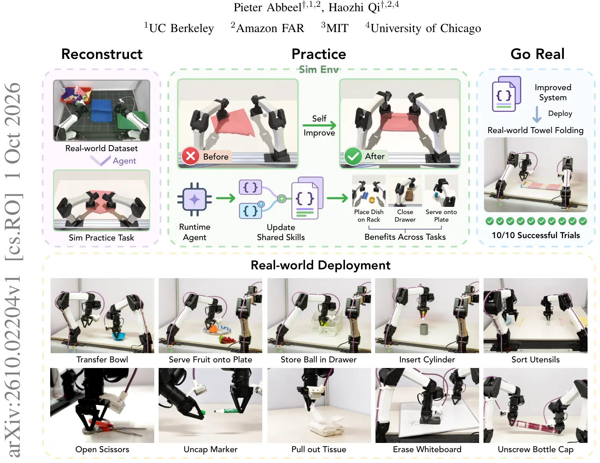
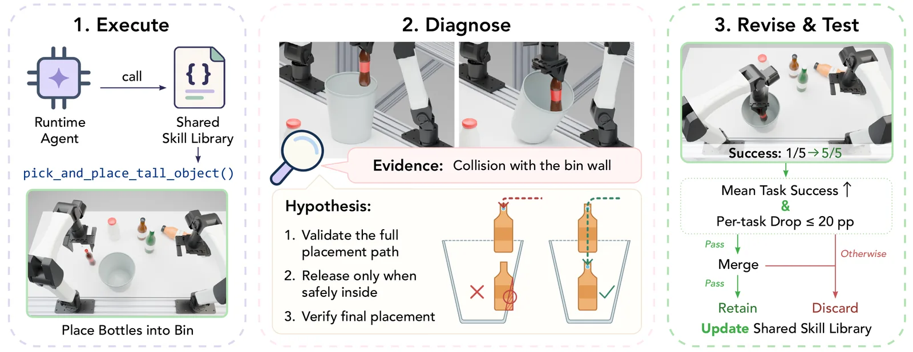
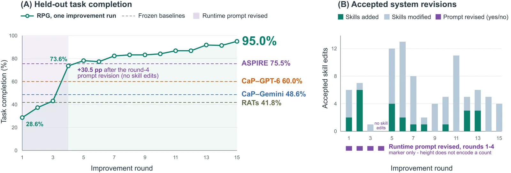
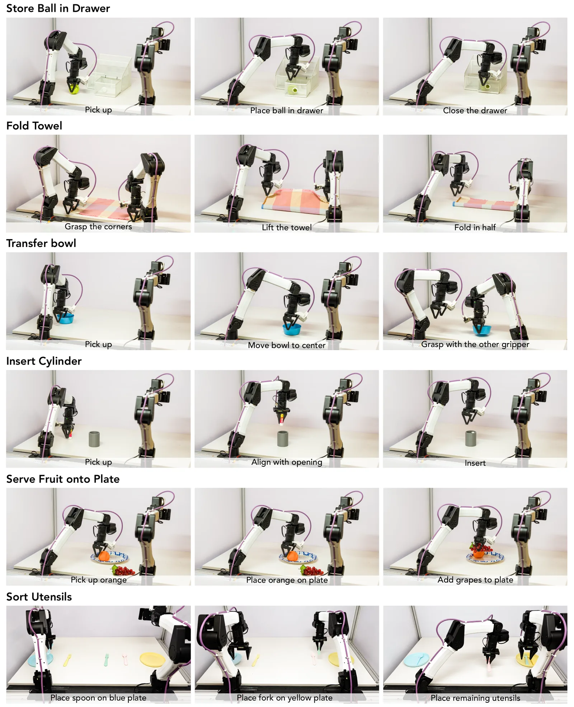

O problema: robôs precisam de muito trabalho humano para funcionar em tarefas diversas
Construir capacidades robóticas confiáveis em tarefas variadas exige esforço humano substancial: desenvolver e manter habilidades, projetar funções de recompensa, integrar percepção e controle. Avanços recentes em modelos de linguagem multimodais (MLLMs) permitem que agentes percebam ambientes, raciocinem sobre tarefas, gerem e executem código, e melhorem através de feedback. Isso abre caminho para expandir o comportamento de robôs com menos engenharia específica por tarefa.
Existe um trade-off fundamental no controle robótico baseado em modelos de linguagem. No paradigma Code-as-Policy, percepção e primitivas de controle são combinadas em programas executáveis. Esses programas rodam eficientemente e podem incorporar loops de feedback, mas suas respostas dependem de lógica explícita e interfaces de percepção. Por exemplo, uma verificação simbólica robusta de sucesso de agarramento pode ser difícil de especificar, enquanto um MLLM consegue avaliar o resultado a partir de imagens.
No paradigma Agent-as-Policy, o MLLM permanece no loop de controle, oferecendo raciocínio visual e semântico flexível. Porém, chamadas frequentes ao modelo tornam decisões de baixo nível lentas. Um sistema escalável deveria combinar essas forças: delegar execução repetível a código reutilizável e reservar raciocínio multimodal para decisões que se beneficiam de julgamento visual ou semântico.
A ideia: Reconstruct, Practice, Go Real
Os autores da UC Berkeley, Amazon FAR, MIT e Universidade de Chicago apresentam RPG (Reconstruct, Practice, Go Real), um framework que desenvolve e refina habilidades robóticas reutilizáveis através de prática autônoma, sem atualizar os pesos do modelo. RPG melhora tanto a biblioteca de habilidades compartilhadas quanto o prompt de sistema que guia um agente multimodal no uso dessas habilidades. Mudanças nesses componentes compartilhados persistem entre episódios e podem beneficiar outras tarefas que os reutilizam.
O framework opera em três fases. Na fase Reconstruct, dado um dataset offline, o sistema seleciona tarefas-fonte que expõem capacidades úteis de manipulação e constrói tarefas de prática relacionadas em simulação. A suíte de prática resultante pode ser expandida processando tarefas adicionais do dataset. Uma tarefa de prática pode cobrir parte de uma tarefa-fonte ou uma manipulação análoga; ela não precisa reproduzir a trajetória ou cena original. Neste trabalho, os autores usam o dataset ABC, que cobre 193 tarefas diversas.
Durante a fase Practice, RPG compara execuções do Runtime Agent e do Privileged Agent. Ambos usam o mesmo modelo e biblioteca de habilidades, mas o Privileged Agent recebe adicionalmente o estado completo do simulador. O Video Analyzer usa esses registros de execução e vídeos disponíveis do dataset para diagnosticar falhas. RPG então desenvolve novas habilidades simbólicas reutilizáveis, refina habilidades existentes e revisa o prompt de sistema. Ele avalia mudanças candidatas através das tarefas de prática e retesta mudanças mescladas antes de retê-las.
Finalmente, a fase Go Real calibra e congela o sistema resultante para implantação física, onde o Runtime Agent coordena percepção e controle através da biblioteca de habilidades compartilhadas.

Como funciona o ciclo de auto-melhoria
O mecanismo central do RPG é o ciclo de prática autônoma. Em cada rodada, o sistema executa todas as tarefas de prática com o Runtime Agent e o Privileged Agent. O Runtime Agent usa apenas observações RGB-D e a biblioteca de habilidades atual, simulando as condições reais de implantação. O Privileged Agent tem acesso ao estado completo do simulador—posições exatas de objetos, configurações de juntas, informações de contato—permitindo diagnósticos mais precisos.
Quando uma execução falha, o Video Analyzer compara as trajetórias dos dois agentes e os vídeos do dataset. Ele identifica onde e por que a falha ocorreu: colisão com parede, agarramento insuficiente, trajetória de colocação inadequada. Com base nesse diagnóstico, o sistema propõe revisões: adicionar uma nova habilidade especializada, modificar uma habilidade existente para tratar um caso específico, ou ajustar o prompt de sistema para melhorar o planejamento de alto nível.
Cada mudança candidata é testada isoladamente em cinco sementes fixas de desenvolvimento por tarefa. Se a mudança melhora o desempenho sem quebrar outras tarefas, ela é aceita. Após coletar mudanças aceitas, o sistema as mescla e retesta o sistema integrado. Apenas mudanças que sobrevivem a essa validação cruzada são retidas. Esse processo garante que melhorias locais não degradem o desempenho global.

O papel do agente privilegiado e do analisador de vídeo
A combinação do Privileged Agent e do Video Analyzer é crucial para diagnósticos precisos. O Privileged Agent pode verificar exatamente onde um objeto está, se um agarramento foi bem-sucedido, ou se uma trajetória vai colidir—informações difíceis de extrair apenas de imagens RGB-D ruidosas. Isso permite ao sistema distinguir entre falhas de percepção (o agente não viu o objeto corretamente) e falhas de execução (a habilidade não implementa a manipulação adequadamente).
O Video Analyzer usa vídeos do dataset para fornecer contexto sobre como humanos ou outros agentes resolveram tarefas similares. Quando o Runtime Agent falha em dobrar uma toalha, por exemplo, o analisador pode comparar com vídeos de dobradura bem-sucedida e identificar que a habilidade atual não está levantando a camada superior suficientemente antes de posicionar. Essa análise multimodal é mais rica que simplesmente comparar estados finais.
Os autores realizam ablações sistemáticas removendo cada componente. Sem o Privileged Agent, o sistema ainda melhora, mas mais lentamente e com menos precisão nos diagnósticos. Sem o Video Analyzer, o sistema perde o contexto visual que ajuda a entender falhas complexas. A combinação dos dois componentes produz os melhores resultados.
Tarefas e protocolo de avaliação
O robô simulado YAM tem dois braços de 6 graus de liberdade e duas garras, recebe observações RGB-D e aceita comandos de 14 dimensões especificando posições-alvo absolutas de juntas. A coleção de prática contém sete tarefas CaP-X e quinze tarefas derivadas de ABC ou análogas, cobrindo transporte, ordenação, empilhamento, extração, inserção, fechamento articulado, manipulação bimanual e dobradura de tecido.
As especificações de tarefa identificam quais corpos são randomizados. Os limites padrão de deslocamento planar e yaw são ±3 cm e ±0,5 rad para corpos rígidos e ±4 cm e ±0,3 rad para tecido. Perturbações também incluem altura da mesa (±8 mm), translação de câmera (±4 mm), rotação de câmera (±0,008 rad), e ruído e viés de profundidade. Caixas e gavetas permanecem fixas.
O protocolo separa rigorosamente desenvolvimento e avaliação. A prática usa cinco sementes fixas de desenvolvimento por tarefa para verificações de candidatos e integração. Após a execução completa de prática de 15 rodadas estar concluída e seus sistemas salvos congelados, os autores avaliam retrospectivamente cada sistema de fim de rodada nas mesmas dez sementes reservadas por tarefa, totalizando 220 episódios por ponto na curva de resultados. Essas sementes são excluídas de melhoria e seleção de checkpoint.
Cada tarefa é avaliada usando sua condição de sucesso predefinida. A maioria das condições verifica diretamente se o objeto-alvo atinge seu estado-meta especificado. Colocação de garrafa só tem sucesso quando ambas as garrafas-alvo são colocadas corretamente entre os distratores. Dobradura de toalha tem sucesso quando a área final é 42–58% da área inicial, cantos correspondentes estão dentro de 5 cm, a camada movida está pelo menos 3 mm acima dos cantos-alvo, e a espessura máxima está abaixo de 5 cm. Cada episódio tem limite de 20 minutos de tempo de robô.
Resultados: de 28,6% para 95% em 15 rodadas
Nas inicializações reservadas de 22 tarefas de manipulação, RPG melhora o sucesso de tarefa de 28,6% após a primeira rodada de prática para 95,0% após 15 rodadas. Esse desempenho supera todos os baselines avaliados: ASPIRE atinge 75,5%, CaP-Agent0 alimentado por GPT-6 Astra Pro atinge 60,0%, a versão com Gemini atinge 48,6%, e RATs atinge 41,8%.
A curva de melhoria mostra ganhos substanciais nas primeiras rodadas. Após a rodada 4, quando o prompt de sistema é revisado pela primeira vez (sem edições de habilidades ainda), o desempenho salta 30,5 pontos percentuais. Isso demonstra que melhorias no planejamento de alto nível podem ter impacto significativo mesmo antes de refinar habilidades individuais. Rodadas subsequentes adicionam e modificam habilidades, com a biblioteca crescendo através de edições aceitas.
A atividade de revisão é heterogênea através das rodadas. Algumas rodadas adicionam várias habilidades novas, outras focam em modificar habilidades existentes. O prompt de sistema é revisado apenas nas rodadas 1–4; após isso, a estrutura de planejamento de alto nível se estabiliza e melhorias vêm principalmente de refinamento de habilidades. Essa separação entre planejamento e execução é uma característica-chave do design do RPG.

Ablações: o que cada componente contribui
Os autores realizam ablações abrangentes para isolar a contribuição de cada componente. Remover o Privileged Agent reduz o desempenho final, mas o sistema ainda melhora—o Video Analyzer sozinho fornece sinal suficiente para algumas correções. Remover o Video Analyzer também degrada resultados, especialmente em tarefas onde contexto visual é crucial para entender falhas.
Uma comparação particularmente reveladora é a ablação library-only, que isola ganhos de revisões de habilidades. Nessa configuração, o sistema usa apenas a biblioteca melhorada, sem o prompt de sistema refinado ou outras mudanças. Isso destaca a importância da validação em nível de tarefa: habilidades individuais podem parecer corretas isoladamente, mas sua composição em tarefas completas requer verificação integrada.
As ablações também revelam que a ordem das melhorias importa. Revisar o prompt de sistema cedo (rodadas 1–4) estabelece uma base sólida de planejamento. Refinamentos subsequentes de habilidades constroem sobre essa base, tratando casos específicos que o planejamento melhorado expõe. Tentar refinar habilidades sem primeiro corrigir o planejamento de alto nível leva a melhorias mais lentas.
Implantação física: 100% de sucesso em 30 tentativas
Após a prática em simulação estar completa, o sistema congelado passa por um procedimento comum de calibração e adaptação de hardware—o mesmo procedimento usado para os baselines. Esse procedimento não envolve retreinamento ou ajuste específico por tarefa; apenas calibra parâmetros de baixo nível como offsets de câmera e limites de força.
O sistema congelado é testado em três tarefas físicas: guardar bola na gaveta, dobrar toalha e transferir tigela. Cada tarefa recebe dez tentativas. O RPG tem sucesso em todas as 30 tentativas. Para comparação, CaP-Agent0 com Gemini tem sucesso em 3/10 para guardar bola, 0/10 para dobrar toalha e 0/10 para transferir tigela. A versão com GPT-6 melhora para 4/10, 9/10 e 1/10, respectivamente.
Os autores também medem resultados de estágios intermediários nas mesmas tentativas. Para guardar bola na gaveta, o estágio intermediário é colocar a bola na gaveta (antes de fechá-la). RPG atinge 10/10 tanto no estágio intermediário quanto na tarefa completa. Para transferir tigela, o estágio intermediário é mover a tigela para o centro; RPG novamente atinge 10/10 em ambos. Esses resultados mostram que o sistema não apenas completa tarefas, mas executa cada etapa de forma confiável.

O que o paper não mostra: limitações e gargalos
Os autores identificam dois gargalos principais que limitam a auto-melhoria. Primeiro, cada rodada coleta trajetórias do Runtime Agent e Privileged Agent através de todas as 22 tarefas, mas limites de taxa de API restringem rollouts paralelos. À medida que o conjunto de tarefas cresce, isso se torna um limitador de velocidade significativo. Trabalho futuro poderia melhorar eficiência através de agendamento de rollout consciente de quota.
Segundo, à medida que o conjunto de tarefas cresce, revisões sobrepostas a habilidades compartilhadas e dependências podem complicar a integração. Uma mudança que melhora uma tarefa pode inadvertidamente quebrar outra que depende do comportamento anterior da habilidade. O sistema atual testa mudanças mescladas, mas integração consciente de dependências poderia reduzir conflitos.
O protocolo de avaliação, embora rigoroso, cobre um escopo específico. As 22 tarefas são diversas dentro do domínio de manipulação de mesa, mas não representam todo o espaço de robótica. As três tarefas físicas demonstram transferência sim-para-real, mas são um subconjunto pequeno. Escalabilidade para centenas de tarefas ou ambientes radicalmente diferentes permanece uma questão em aberto.
O framework assume acesso a um dataset offline que cobre capacidades de manipulação relevantes. Construir a suíte de prática inicial requer esse dado. Para domínios onde tais datasets não existem, o custo de coleta pode ser substancial. Além disso, o sistema atual usa Gemini 3.8 para todos os agentes; dependência de modelos proprietários pode limitar reprodutibilidade e controle.
Por que isso importa
RPG demonstra que componentes compartilhados—bibliotecas de habilidades e prompts de sistema—podem servir como alvos práticos para melhoria persistente de robôs. Ao contrário de abordagens que retreinam modelos inteiros, RPG melhora artefatos simbólicos que são interpretáveis, editáveis e reutilizáveis. Isso reduz o custo de adicionar novas capacidades e facilita debugging quando algo falha.
A separação entre planejamento de alto nível (no prompt de sistema) e execução de baixo nível (em habilidades de código) é arquiteturalmente importante. Ela permite que o sistema reserve raciocínio multimodal caro para decisões que realmente se beneficiam dele, enquanto delega loops de controle repetíveis a código eficiente. Essa divisão de trabalho é provavelmente necessária para sistemas robóticos escaláveis.
Os resultados físicos são particularmente encorajadores. Transferência sim-para-real permanece um desafio central em robótica, e muitos métodos que funcionam bem em simulação falham no hardware. Que o sistema congelado do RPG atinja 100% de sucesso em 30 tentativas físicas—após apenas calibração comum de hardware—sugere que a prática autônoma em simulação pode de fato produzir habilidades robustas para implantação real.
O framework é expandível por design. A suíte de prática pode crescer adicionando tarefas do dataset ABC ou outros datasets. Habilidades desenvolvidas para um conjunto de tarefas podem beneficiar tarefas futuras que as reutilizam. Essa composicionalidade é essencial para construir sistemas robóticos que melhorem continuamente ao longo do tempo, em vez de requerer reengenharia para cada nova tarefa.
O que fica
- RPG melhora sucesso de 28,6% para 95% em 22 tarefas praticando em simulação com feedback privilegiado e diagnóstico por vídeo, sem retreinar modelos.
- Sistema congelado atinge 100% de sucesso em 30 tentativas físicas após calibração comum, superando CaP-Agent0 com GPT-6 (60% em simulação, resultados mistos em física).
- Revisão do prompt de sistema nas rodadas 1–4 adiciona +30,5 pontos percentuais; refinamentos posteriores de habilidades constroem sobre essa base de planejamento.
- Limitações: limites de API restringem rollouts paralelos; crescimento do conjunto de tarefas complica integração de revisões sobrepostas a habilidades compartilhadas.
Paper original: Reconstruct, Practice, Go Real: Guided Self-Improvement for Embodied Agents
Comentários
Nenhum comentário ainda. Seja o primeiro.